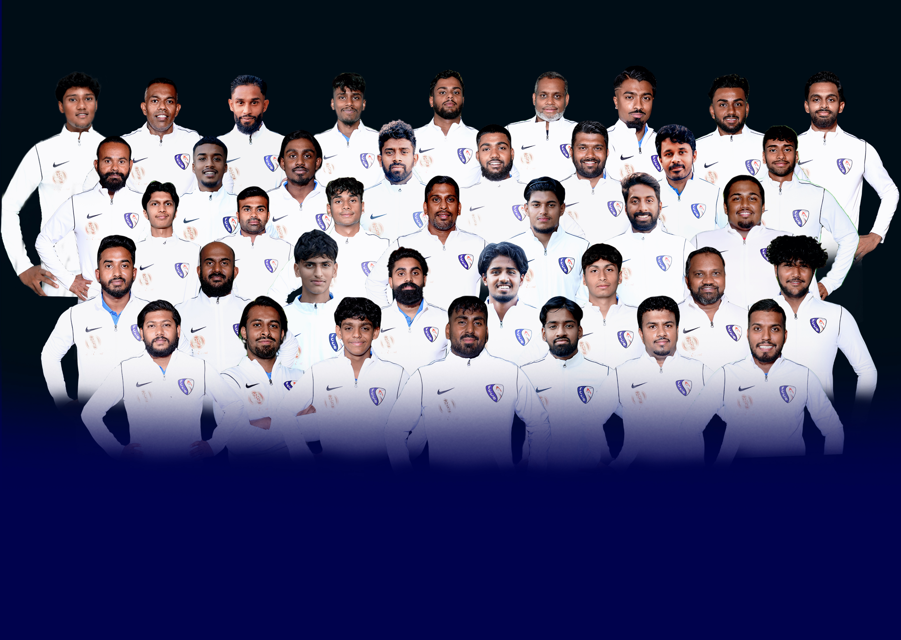

Unsere Mannschaft
Hier finden Sie Informationen zu unserer ersten Mannschaft. Unsere erste Mannschaft besteht aus talentierten und engagierten Spielern, die regelmäßig an regionalen und nationalen Wettbewerben teilnehmen. Das Team trainiert mehrmals pro Woche unter der Leitung erfahrener Trainer. Jedes Mitglied der Mannschaft bringt einzigartige Fähigkeiten und Stärken mit, die zum Erfolg des Teams beitragen. Wir legen großen Wert auf Disziplin, Teamarbeit und sportlichen Ehrgeiz. Die Spieler der ersten Mannschaft sind Vorbilder für unsere jüngeren Mitglieder und repräsentieren den Verein mit Stolz. Durch harte Arbeit und kontinuierliche Verbesserung streben wir nach Spitzenleistungen. Unsere Fans unterstützen uns bei jedem Spiel und tragen wesentlich zu unserer Motivation bei. Zusammen haben wir viele Erfolge erzielt und streben nach weiteren Titeln und Auszeichnungen.
Lizenziert von fccityboyszh